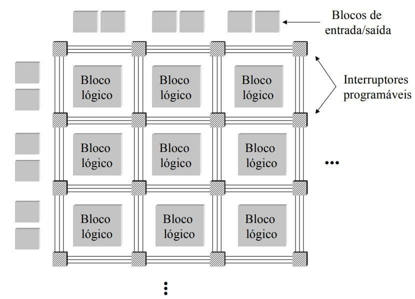

https://goo.gl/N1RXnG
Baixíssimo nível de autonomia
Não possui uma representação interna de seu próprio estado
Velocidade do hardware combinada com a flexibilidade do software
A arquitetura pode ser modificada em tempo real
Eficiência muito maior
Arquitetura de FPGA
Sistemas interativos/Active Spaces
Interação entre vários dispositivos no mesmo espaço físico
Heterogeneidade e diversidade dos dispositivos tornam o sistema complexo
Alta demanda por capacidade de reconfiguração automática
Modelo Von Neumann não será suficiente para atender as necessidades de tecnologia da informação
Futuros sistemas devem apresentar:
Pouca preocupação com a qualidade
Monitores monocromáticos
Interação com as máquinas de forma a tornar seu uso mais fácil e eficiente.
10 regras heurísticas de Nielsen
Pode-se chegar a algumas conclusões e identificar-se alguns problemas
Visibilidade do estado do sistema: O sistema deve sempre manter os usuários informados sobre o que está acontecendo, através de um feedback apropriado e dentro de um tempo razoável;
"Considerações: como é que um S.O. vai informar ao usuário o que está acontecendo, se nem mesmo ele tem conhecimento para isto? O nível de domínio do S.O. restringe-se principalmente ao tratamento de exceções, e estas são de muito baixo nível e não agregam informação útil ao usuário (ex: famosa tela azul do Windows). Se os programas são bem comportados, não há muito feedback a ser fornecido além dos tradicionais: quantidade de memória e disco disponíveis, percentagem de uso de Cpu, etc."
Sincronismo (match) entre sistema e o mundo real: O sistema deve falar a língua do usuário, com frases e conceitos familiares ao invés de usar termos do domínio do sistema; seguir convenções do mundo real fazendo as informações parecerem de forma lógica e natural;
"Considerações: esta questão ainda está longe de ser solucionada a nível de S.O. visto que, como afirmado acima, o sistema possui pouco conhecimento sobre seu real estado, e por outro lado, desconhece o perfil do usuário e das aplicações."
Controle do usuário e liberdade: Eventualmente os usuários escolhem alguma função por engano e necessitam de uma saída de emergência para sair deste estado sem ter que navegar por vários menus;
"Considerações: como o sistema não tem controle sobre as aplicações, isto fica a cargo de cada aplicação individualmente o que faz com que o usuário necessite treinamento específico a cada tipo de aplicação, e o comportamento geral do sistema sob a ótica do usuário seja orientada por aplicativos. É interessante observar que, por conta deste fato, quando uma aplicação produz uma situação de erro, a "culpa" recai sobre o sistema operacional."
Consistência e padronização: Os usuários não deveriam ter que se preocupar se diferentes palavras, situações ou ações significam a mesma coisa;deve-se seguir os padrões da plataforma;
"Considerações: esta questão é interessante tendo em vista que, um S.O. sendo um software genérico, tem que manter compatibilidade com versões antigas de aplicativos ao mesmo tempo em que insere novos conceitos de interface e recursos adicionais. Esta mesma situação pode conduzir a ambigüidades na medida em que tarefas podem ser executadas de várias formas possíveis dificultando o aprendizado de usuários menos experientes."
Prevenção de erros: Melhor que mensagens de erro é um projeto que previna a ocorrência de problemas;
"Considerações: esta questão remete à área de engenharia de software e todos os fatores associados à metodologias de desenvolvimento de sistemas, planejamento de testes e questões correlatas. No entanto, é opinião dos autores que, alguns problemas poderiam ser antecipados pelo sistema e adotadas soluções amigáveis ao invés de simplesmente reportar mensagens de erro."
Identificar ao invés de relembrar: Tornar objetos, ações e opções visíveis. O usuário não deveria ter que lembrar informações de um diálogo para outro. Instruções para uso do sistema deveriam ser visíveis ou facilmente recuperáveis sempre que apropriado;
"Considerações: este é um dos aspectos mais críticos constatados na interface dos atuais S.O.'s. Quando um problema acontece, freqüentemente há a necessidade de percorrer vários menus e aplicações para relembrar configurações atuais para tentar solucionar o problema. Por exemplo: configurações de rede."
Flexibilidade e eficiência de uso: Aceleradores podem agilizar a execução das tarefas por usuários experientes ao passo que para usuários não experientes, eles devem ser escondidos;devem permitir ao usuário agregar conjuntos de ações freqüentes;
"Considerações: este aspecto já vem sendo utilizado em ambientes de S.O.'s através de linguagens de scripts há muito tempo; no entanto requerem um bom grau de conhecimento, tornando-se ferramentas inúteis para usuários não especializados."
Projeto harmonioso e simples: Os menus não devem conter informações que são irrelevantes ou raramente utilizadas;cada unidade extra de informação em um diálogo compete com unidades relevantes e diminui a visibilidade relativa das mesmas
"Considerações: esta facilidade já pode ser encontrada em sistemas mais recentes (Windows 2000, ME) e aplicativos (ex: pacote office da Microsoft); e apresentam como característica principal a limpeza das listas de opções dos menus; além disso, pode-se encontrar no mesmo pacote office a figura do agente que procura antecipar ações do usuário, auxiliando assim a usuários leigos."
Auxiliar o usuário a reconhecer, diagnosticar e recuperar-se de erros: Mensagens de erros não devem ser expressas através de códigos e devem indicar precisamente o problema e construtivamente sugerir soluções;
"Considerações: este aspecto está longe de ser solucionado, visto que a própria estrutura de API's dos sistemas é orientada por códigos de erro. Há algumas iniciativas de minimizar o efeito dos códigos de erro através do uso de wizards (windows), no entanto, sua abrangência ainda é limitada."
Help e documentação: Mesmo se o sistema possa ser utilizado sem documentação, ela pode ser necessária para prover auxilio em determinado momento; qualquer fonte de informação deve ser de fácil consulta, orientada para tarefas, listar passos concretos a serem seguidos e não ser muito extensa
"Considerações: este aspecto apresenta características conflitantes quando analisado sob o contexto de um sistema operacional dada a sua abrangência e generalidade. No entanto, um sistema com maior nível de conhecimento interno, contribuiria para a redução no número de possibilidades de diferentes soluções de problemas."
A complexidade é enorme e não um padrão de fato estabelecido
Este problema é potencializado a medida em que se incluem novas aplicações
Há muito tempo vem sido desenvolvidos arquiteturas capazes de controlar robôs que operam em ambientes complexos.
Principais objetivos a serem atingidos no projeto:
Aplicação antes de ser disparada poderia informar ao sistema suas necessidades
Atividades de reconfiguração são transparentes
O alto desempenho do hardware para obter flexibilidade do software.
O artigo mostra um projeto de pesquisa que visa propor uma arquitetura de sistema operacional que forneça suporte adequado ao desenvolvimento de aplicações mais inteligentes e que permita a interação entre o usuário e os recursos computacionais de forma mais transparente. Assim, deixando o sistema operacional mais inteligente e com uma eficiência maior.